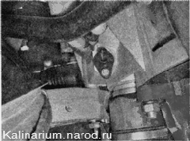
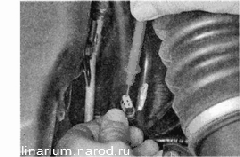
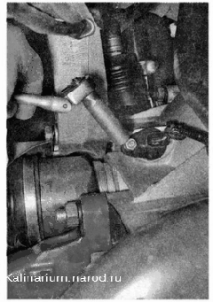
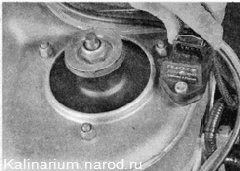
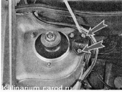

Датчик скорости автомобиля и датчик неровной дороги проверка и заменаДля выполнения работы потребуется мультиметр (в режиме вольтметра). Снятие и проверка 1. Подготавливаем автомобиль к выполнению работы. 2. Освободив фиксатор, отсоединяем колодку жгута проводов от датчика скорости автомобиля.  3. Подсоединяем «минусовой» щуп вольтметра к «массе» (к двигателю). 4. Включив зажигание, вольтметром измеряем напряжение питания на выводе «I» колодки жгута проводов (обозначение вывода выполнено на датчике). Напряжение на выводе должно быть не меньше 12 В. Если напряжение не поступает на колодку или оно меньше 12 В, значит, разряжена аккумуляторная батарея, неисправна цепь питания или неисправен ЭБУ. 5. Торцовым ключом на 10 мм отворачиваем гайку крепления датчика. 
6. Извлекаем датчик из картера сцепления. Убедиться в неисправности датчика скорости можно, заменив его заведомо исправным. Установка Устанавливаем датчик в последовательности, обратной снятию. ДАТЧИК НЕРОВНОЙ ДОРОГИ - ЗАМЕНАСнятие 1. Подготавливаем автомобиль к выполнению работы. 2. Сжав петли фиксатора, отсоединяем колодку жгута проводов от датчика.  3. Крестовой отверткой отворачиваем два винта крепления датчика неровной дороги к кронштейну и снимаем датчик.  Установка Устанавливаем в обратной последовательности. |